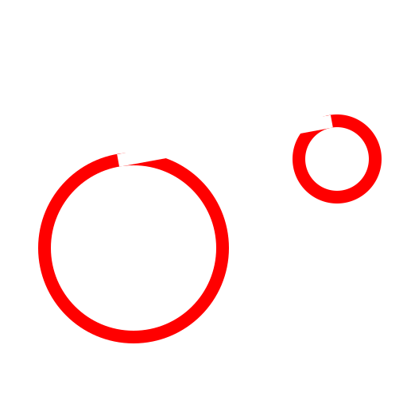

Tangente (zwei Kreise) (L, T, 2)
Werkzeugleiste / Symbol:


Menü: Zeichnen > Linie > Tangente (zwei Kreise) (L, T, 2)
Kommandos: linetangent2 | tangent2 | lt2
Beschreibung:
Konstruiert eine Tangente von einem Kreisbogen oder Kreis an einen
anderen.
Vorgehensweise:
- Wählen Sie den ersten Kreis oder Kreisbogen.
- Wählen Sie den zweiten Kreis oder Kreisbogen. In der Regel sind vier
Tangenten möglich. Wenn Sie die Maus bewegen können Sie jeweils die Vorschau
der Tangente sehen, die konstruiert würde, wenn Sie klicken.